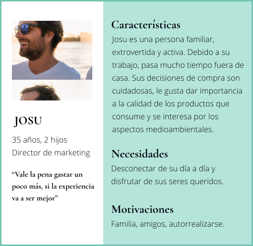

UNE
Diseño de producto & marca
2018, 2 meses, 4 personas
En este proyecto se ha desarrollado un concepto innovador de las botellas de vidrio, en concreto de una botella de pacharán, teniendo como referencia a la empresa Vidrala. El principal objetivo ha sido crear un producto capaz de reunir a la familia, convirtiendo el pacharán en símbolo de unión. Para ello, se ha trabajado tanto en la viabilidad del producto, como en la creación de la marca, la comunicación y su entorno.
Análisis
Nuestro ritmo de vida es cada vez más acelerado. Nos cuesta pararnos a respirar, relajarnos y disfrutar. Las cosas realmente importantes pasan desapercibidas. Cada vez pasamos más tiempo fuera de casa; por trabajo, estudios o viajes, y el hecho de volver a casa y juntarse con nuestra gente se ha convertido en algo ocasional.
Se ha realizado una búsqueda de las tendencias sociales y titulares más relevantes de la actualidad, agrupándolos en tres principales ideas:
“La prisa como estilo de vida”
“La magia de la mesa familiar”
“El boom de las bebidas artesanales”
Se ha visto que la empresa Vidrala cuenta con una escasa variedad de envases para licores. Teniendo ésto en cuenta y tras ver que existe una demanda de productos artesanales en la sociedad, se ha decidido diseñar una botella de pacharán, una bebida tradicional del País Vasco.
Diseñar un nuevo concepto de pacharán, un envase de vidrio creado para ser la siguiente estación de todos los miembros de la familia.
Usuario objetivo
Resultado
UNE está diseñado para ser el centro de las mesas. Ofrece un punto de modernidad, manteniendo la esencia de la bebida. Sus colores neutros y estilo minimalista reflejan la elegancia de su consumidor. Cada detalle de este diseño innovador tiene su significado. La parte inferior de la botella representa el momento de respiro, al igual que la tipografía, separando cada letra con espacios amplios.
A través del diseño de UNE se ha querido representar el equilibrio. Se trata de un único elemento de vidrio, cuya parte superior está pintada de negro, mientras que en la parte inferior se queda el color vivo del pacharán al descubierto. Estas dos partes tratan de representar la indivisibilidad de la familia. UNE es circular, para dirigirse de la misma manera a todos los que se encuentran alrededor de la mesa.
UNE es presentado con la delicadeza que se merece, ofreciendo un envase que hará que la experiencia de descubrir la botella sea increíble. El envase secundario se compone por dos partes: La primera es un cilindro que cubre totalmente el producto y la segunda el soporte, la mitad del cilindro que mentiene la botella. Para abrir el envase, el cliente tendrá que posarlo en la mesa, sujetarlo con una mano y tirar de la cuerda con la otra mano.

UNE es un producto exclusivo. Aparte de vender el producto la experiencia y las sensaciones tienen una gran importancia. Es por ello que se podrá obteer en establecimientos gourmet y en algunos supermercados. Debido a que el pacharán es un producto tradicional del norte del país, será fácil encontrar UNE en las tiendas mencionadas del lugar, pero aparte de ello, el cliente tendrá la oportunidad de obtenerla en la web oficial de la marca.
¿Hablamos?
Si te gusta lo que ves, no dudes en ponerte en contacto conmigo.
Me encantaría conocerte.